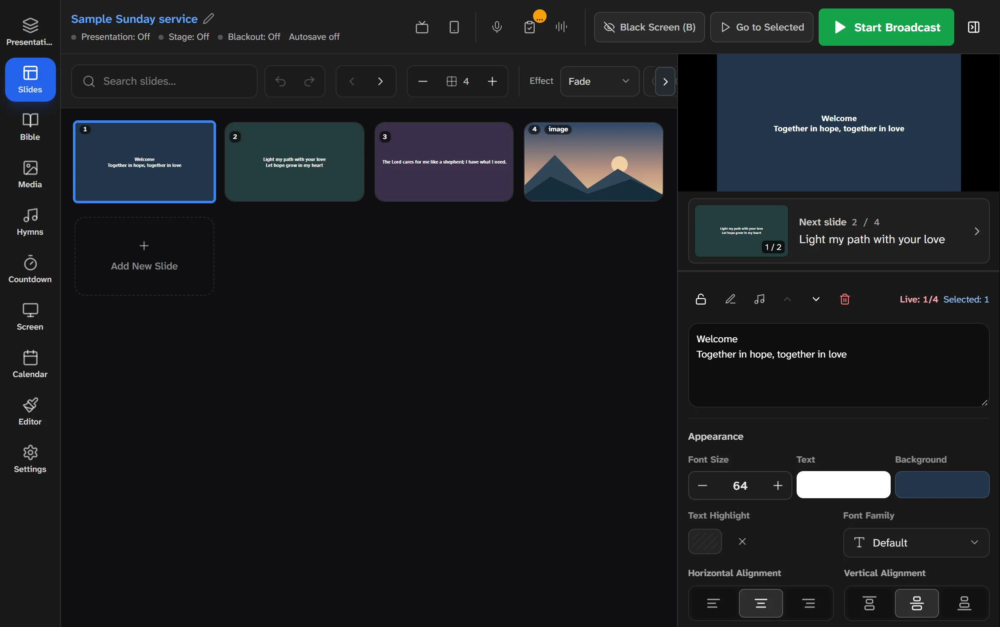

Slides & live control
The live moment, on one screen.
Build the running order as slides and keep the live output in view at all times. Go live, cue the next slide or black out the screen with a single click or key.
- Always-visible live preview, with an optional “next slide” card
- Fade, slide, zoom, blur and flip transitions
- Black screen (B) and a broadcast lock for the current slide
- Preparation check for missing media, fonts and overflowing text
